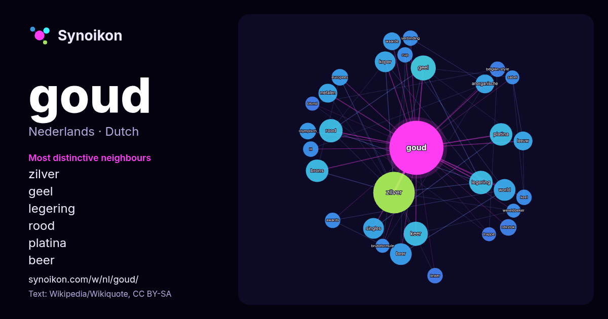

Nederlands · lijst met woorden van de dag
goud
“gold” · De woorden rond dit woord in 442 voorkomens uit Wikipedia, Wikiquote.

Meest kenmerkende buren
- zilver 42×
- geel 16×
- legering 15×
- rood 14×
- platina 14×
- beer 13×
- koper 12×
- world 11×
- brons 10×
- anorganische 9.9×
- keer 9.8×
- metalen 9.6×
- leeuw 9.4×
- singles 8.6×
- waarde 8.0×
- rekstok 8.0×
- olympisch 7.5×
- belgian-style 7.0×
- linker 6.9×
- europees 6.8×
× = hoeveel keer vaker dan in gewone Wikipedia-tekst.
Meest voorkomende buren
- zilver 44
- geel 16
- keer 15
- legering 14
- rood 14
- brons 13
- platina 13
- beer 12
- world 12
- koper 11
- singles 11
- jaar 10
- anorganische 9
- leeuw 9
- metalen 9
- nederlands 8
- waarde 8
- europees 7
- olympisch 7
- rekstok 7
In context
- Zie Goud (doorverwijspagina) voor andere betekenissen van Goud. Goud (Latijn: aurum) is een scheikundig element met symbool Au en atoomnummer 79. Het is Wikipedia snippets · Goud
- vinden. De gouden standaard is een muntstelsel waarin de economische rekeneenheid een vastgesteld gewicht aan goud is. Een bepaald gewicht aan goud staat dan Wikipedia snippets · Gouden standaard (economie)
- 24-karaats goud naar lichtgeel. Het tegenovergestelde, een goudlegering met meer koper dan zilver, noemt men rood goud. Geel goud wordt vooral voor gouden sieraden Wikipedia snippets · Geel goud
- 16,94 het goud veroverde. Reeds als junior behaalde Guus Janssen op verschillende nationale kampioenschappen eremetaal, waaronder een gouden plak op de Wikipedia snippets · Guus Janssen (atleet)
- moederkruis werd in 1938 en 1939 in brons, zilver (eigenlijk verzilverd brons) en goud (eigenlijk verguld brons) uitgereikt. Men kreeg de kruisen voor respectievelijk Wikipedia snippets · Moederkruis
- Eetbaar goud is als goudkleurige kleurstof toegelaten in de Europese Unie met het e-nummer E175. In rijke oliestaten is het populair als decoratie van Wikipedia snippets · Eetbaar goud
- Witgoud is meestal een legering van goud en palladium of nikkel en wordt nogal eens verward met platina of zilver omdat ze qua kleur op elkaar lijken. Wikipedia snippets · Witgoud
- Goud van Oud is een programma van Radio Veronica, dat uitgezonden wordt in de late ochtend, na de ochtendshow. In Goud van Oud wordt voornamelijk gouwe Wikipedia snippets · Goud van Oud
Meer woorden
Vooraf berekend op 2026-10-09 met standaardinstellingen (±5 woorden, middelgroot corpus). De interactieve kaart kan het met live gegevens vernieuwen.
Machinaal vertaalde interface; correcties welkom.